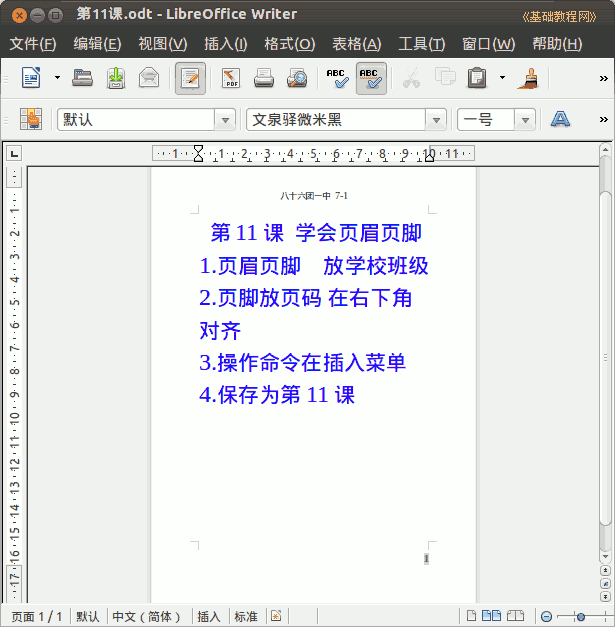

2011-2012 第二学期七年级文字处理和网页教学设计
作者：TeliuTe 来源：基础教程网
十一、学会页眉页脚 返回目录 下一课
（一）教学设计
1、学习目标：学会使用页眉页脚
2、注意事项：
3、教学过程：
1）教师准备学案和板书；
2）学生整队进入，开机抄黑板上笔记；
3）教师讲解板书演示操作；
4）学生打指法、日志、完成操作；
5）教师打勾记录学生指法成绩，检查日志和操作；
注：学生抄完笔记就开始打指法、日志，老师讲完后再继续完成；
（二）板书设计(学生笔记)
第11课 学会页眉页脚
1、页眉一般放学校、班级
2、页脚插入页码，在右下角对齐
3、操作命令在插入菜单
4、保存为第11课
操作图示：

（三）课后记 2012-03-27 16:17
学生差异太大，操作上也有问题
页眉都会，但是页脚就有问题了
--
讲的时候用书举例子，上边是页眉下边是页脚
居然不是词语，打的时候细心些
--
把中键复制讲了一下，实在做不出来也没事
必须要写到黑板上，否则讲完记不了那么多
--
差不多可以休息下，玩得高兴有些吵闹
适当提醒下才行，要求到了就是执行到位
--
这个七年级有些吵闹，爱大声说话说脏话
晚上上晚自习也吵的，在楼底下都能听到
--
不用弄太累了，差不多就休息下
适当加强运动，有空就休息下也好
--
页脚还是个问题，或者是2班有些晕了
这个班学习有些问题，明显退步了
--
要么下次分两步，只是这个italc老是出问题
后面看看是还是得重新恢复一下系统才好
--
要不先插入页眉页脚，然后再输入正文内容
或者是分两步，先做页眉页脚 ，然后再打正文
--
没想到看似简单，做起来却绕不过弯
板书写成操作比较好
返回目录 下一课
本教程由86团学校TeliuTe制作|著作权所有
基础教程网：http://teliute.org/
美丽的校园……
转载和引用本站内容，请保留作者和本站链接。